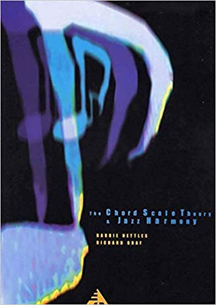

终于，我们要运用和弦音阶理论（CST）进行实战演练了。按常理来说这原本应当在爵士乐中施展，但难得有此机会，这次我们特意在爵士以外的音乐风格中进行实战。 毕竟“爵士理论在爵士乐中的实践应用”，在任何一本正统爵士理论书中都能找到大把详尽范例；因此，向大家传授其在现代流行音乐中的实战应用方法，正是我们自由派乐理的使命所在。
 1. 调式转换（Mode Change）
1. 调式转换（Mode Change）
活用已掌握的27个调式最极致的方法，莫过于在相同的根音上切换替换调式。在本章中段，我们曾介绍过在III7和弦上替换尝试几种不同音阶的套路。不过那时由于尚未建立和弦音阶理论的视角，解释难免流于表面。而本次正是要对此进行彻底的深度剖析。
以根音为基准的调式替换
说到调式替换，大家脑海中一定会浮现出本章前半部分学过的“调式互换（Modal Interchange）”这个术语。但那是在接触CST之前的概念，当时所替换的是统摄整个调性的“母音阶”。
如上所示，替换的核心基准是整个调性的中心。在上面的例子中，因为调性是C大调，所以始终是在“C 某某音阶”的宏观母体之间进行借用互换。这可以说是一种依赖于调性的方法论。然而CST的核心精髓，是将和弦从调性中彻底剥离出来看待。既然理论的终极目标是从调性的束缚中获得自由，那么在调式替换时依然事事以中心音（Tonal Center）为基准，多少有些违背其根本宗旨。
因此这一次，我们考虑以各调式自身的中心音（我们称之为“调式根音 Mode Root”）为轴心进行替换。
像这样，建立在CST系统之上，先将音乐分解到每一个独立的和弦，然后在此微观层面上更换调式。这就是我们要进行的不依赖调性的调式转换。
关于命名
关于这种“以单个和弦为单位的调式替换”，业界其实并没有一个特别专用的术语。归根结底，这无非就是“从候补和弦音阶中挑选一个来用”的动作，或许正因其过于寻常基础，才没有被特意起名。
虽然在广义上它也可以被视作“调式互换”的一种形式，但由于二者的具体操作逻辑存在微妙差异，强行共用同一个词反而容易产生混淆。在此为了叙述方便，我们将这种调式替换单纯称为“调式转换（Mode Change）”。
- 调式转换（Mode Change） 将曲中某个和弦的调式，替换为拥有相同调式根音（Mode Root）的另一个调式。
这也可以说是“和弦品质改变（Quality Change）”的合理升级版。在第I章中，我们仅仅将目光聚焦在和弦品质的变化上，最终只以“写旋律时其他音也可能会被顺带牵扯着发生变化”这样含糊笼统的定性描述草草收尾。 而如今，我们不仅将其严谨理论化，更能深入切入“保持和弦品质完全不变、仅在内部偷换引伸音”——即进入“No Quality Change, Yes Mode Change”的高阶精微领域。
调式的替换完全自由
必须明确的一个大前提是：调式的替换并没有任何死板固定的成法套路。爵士理论本质上只负责告诉你某些音或音阶是“Available（可用）”的，至于如何在这些可用的候选项中进行艺术抉择，则完全取决于理论使用者自身的审美意图。
接下来，我们将设定几种具体的音乐情境，向大家展示如何将这些理论知识转化为生动音乐创作的实战范例。
2. 在 VI-7 上进行调式转换
首先，我们来尝试在相同和弦品质内部进行调式转换。例如在一段氛围幽暗低沉的BGM中，设定一段以 VI–7 持续单和弦贯穿延展的音乐片段。
VI Dorian
这是使用多利亚调式演奏的范例。从整体追求黑暗压抑的氛围来看，多利亚听起来略显明朗轻快，有些不对味。于是，我们改用色彩偏暗的弗里几亚试听一下。
VI Phrygian
这么一来，沉重压抑感虽然出来了，但未免过于死沉，那种“剑拔弩张、如履薄冰的张力感”反倒被稀释了。这同样不太尽如人意……在尚未掌握CST之前遇到这种情况，人们往往只能叹口气：“那还是用普通的自然小调（爱奥利亚）吧……唉，结果还是落入了最俗套的平庸解法……(´・ω・｀)”。
然而！如今已经融会贯通了27个调式的你，瞬间就能敏锐捕捉到一个事实：既然想要介于多利亚与弗里几亚之间的色彩，直接使用“多利亚 ♭2（Dorian ♭2）”不就迎刃而解了吗！
正如你所见，在“调式地图”中，不偏不倚正好坐落在多利亚与弗里几亚正中央的，正是“多利亚 ♭2”。正因为我们曾深入探寻过调式的全景版图，才能如此神速地发掘出这个宝藏选项。这是用“清晰的思考”高维俯瞰音乐世界所带来的降维打击。我们立刻用多利亚 ♭2 重新编排乐句线条试听一下：
VI Dorian ♭2
正如你听到的，多利亚标志性的明亮6th，与弗里几亚标志性的阴郁♭2nd，二者完美水乳交融，孕育出了独具一格、极其惊艳的音响色彩。
“把多利亚与弗里几亚调和在一起变成多利几亚调式～”，我们在旋律篇的“音阶的调合”中也曾尝试过。当初全凭直觉试错摸索的事情，如今从一开始就能通过成体系的知识精准覆盖。这就是我们此刻所实现的“体系的合理升级”。
3. 以根音VI为轴进行调式转换
这一次我们不再局限于相同的和弦品质，而是尝试在贝斯低音与主旋律音固定的状态下更换调式的模式。
根音为VI，旋律持续为9th
例如像这样，以VI为根音，主旋律持续发响9th音，来制作一段黑暗风的配乐片段。其核心构想是：通过多方变化和弦内部的和声色彩，来不断刷新主旋律中9th音的听感与韵味。
在掌管VI-7的“爱奥利亚”的正下方紧挨着“爱奥利亚 ♭5”，我们首先平移至此处，顺理成章地将和弦品质改写为半减和弦：
随后从这里跨越两个明暗层级，迈向属于小大七和弦（mM7）领地的“和声小调”。这可以说是相当大胆冒险的一步。
第4小节继续保持这个“和声小调”，故意肆意大声弹响原本属于避用音的♭6th，将寻求解决的渴望推向最高潮，随后再度平稳归航回“爱奥利亚”。
爱奥利亚 → 爱奥利亚 ♭5 → 和声小调 × 2
虽然在5th与7th的声部对和弦品质做了剧烈改动，但由于最核心的根音（Rt）与3rd保持恒定，加之旋律中贯穿的9th也保持不变，因此整体音响变幻显得极为平滑自然。在根音为VI时，果断动用半减和弦或小大七和弦——单凭原始直觉，往往是极难鼓起勇气做出这种配和弦决策的。
这种“以旋律为主导的和声配置（Melody-Order Harmonization）”，正是我们在旋律篇第V章深入探讨的内容。在那一边我们从根本法则与声学原理出发进行了理论化建构；而这一边则是通过搜集离散数据强记归纳的完全反向进路。将二者有机咬合，必将成为威力非凡的创作利器。
像这样“从音阶出发去推演音乐的和声展开”，是在轻量级流行乐理范畴内极少涉猎的高阶方法论。通过研习CST，这种构建音乐的全新范式得以成为可能，音乐创造力将获得前所未有的释放与自由。
4. 在 V7 上进行调式转换
接下来我们尝试流行歌曲中最为常见的“旋律先行、为其配置伴奏和弦”的应用场景。假设我们以大家极其熟悉的 IVΔ - III7 - VI–7 - V–7 进行构思了一段旋律：
IVΔ III7 VI–7 V–7 ?
萨克斯风演奏的是临时旋律。听起来感觉挺不错的对吧？正当我们沾沾自喜时，却突然发现了一个致命的结构问题：这段旋律在V-7出现的位置，竟然高亢地唱出了还原B（B♮）！ 如果继续沿用V-7伴奏，这个音就会与和弦内的降B音（B♭）发生极其刺耳激烈的正面冲突，根本无法和谐发声。
最後にむりやりV–7
正如你听到的，想要引吭高歌的还原B旋律，与试图营造感伤忧郁的降B伴奏互相撞车，各自的魅力在互踩中被彻底抹杀。这下棘手了。但若退而求其次仅用平淡无奇的纯V和弦或IΔ来对付，又显得过于单调乏味。从“B-G-E”这组旋律音出发所能想到的常规和弦中，虽然有VI7等选项……
最後にVI7
音响本身虽然不差，但贝斯低音连续停留在VI级上，整个和弦进行的推动力与展开感严重欠缺……低音无论如何还是强烈渴望走向V级。面对这种两难困境，流行乐理的锦囊瞬间见底，令人抓耳挠腮。在考虑基于既有旋律进行重新配和弦（Reharmonization）时，仅靠常规流行乐理，可选路径其实出人意料地狭窄闭塞。
此时，正是和弦音阶理论挺身而出的高光时刻！ 旋律音是“B-G-E-D-G”，如果以V（G）为根音，意味着“Rt、M3rd、P5th、M6th”已经板上钉钉被锁定了。在这套框架下，调式世界里是否有完美嵌合的选手呢？脑海在调式地图中飞速检索……
有了！属利底亚（Lydian Dominant）岂不是最完美的绝配？！其♯11的冷艳音响与VI7有异曲同工之妙，既成熟高雅，其全部构成音又能与主旋律丝丝入扣地无缝吻合！
最后配置 V Lydian Dominant
根音稳稳落在了V级，旋律神采奕奕充满生命力，伴奏音响更是暗藏迷人的危险锋芒！我们用极高的效率，将心中所想的音响蓝图精准转化为现实作品。平心而论，即便没有CST的成套知识，假以时日死磕冥想，或许也能碰巧试出这样的神来之笔。然而，在锁定答案的闪电反应速度、以及对各个调式色彩性格的洞若观火上，正是CST让一切创作流程变得无与伦比地丝滑流畅。
和弦音阶理论虽然最初是为即兴演奏特化构想的系统，但像这样在实际作曲编曲制作中，它同样是协助你将脑海中飘渺音响具象落地的终极利器。
固定和弦品质的转换、固定根音与引伸音的转换、固定旋律与根音的转换——以上便是最核心的几种转换范式。当然，调式思维的应用远不止于此，无论是在构筑高阶转调技法，还是在探索多调性（Polytonality）的宏大编织时，它都能提供源源不绝的深厚养分。
这张地图本身，就是取之不尽的灵感之泉。虽然只有短短9讲的“和弦音阶理论”，但从音阶维度去洞察音乐的爵士系理论的深邃魅力，想必大家已经窥得其磅礴一角。
真正的专业爵士理论书都包含什么
在本章中，我们所能引介的仅仅是爵士系理论的大体轮廓、独特风貌，以及能在流行音乐创作中立竿见影的基础音阶。当你翻开那些厚如砖石的经典大部头著作时，映入眼帘的将是诸如下述浩瀚充沛的深水区内容：
- 针对各类复杂和弦的详尽和弦音阶配置
- 海量精妙的爵士和弦排列（Voicing）范例
- 更加庞杂深奥的扩展音阶体系
- 传奇爵士大师真实实战中的“离调/游离（Outside）”即兴实录谱例
在后半部分中，我们花费了相当大的篇幅来理解“和弦音阶理论”的底层逻辑，但这不过是爵士理论的基石之一，远非爵士乐理的全部。另外需要牢记的是，即便是统称为“爵士乐理”，不同学派著作之间的侧重点与哲学旨趣也大相径庭。在学完本章的此刻，让我们重新回顾并点评本章开篇推荐过的几本经典参考文献的独特风貌：
The Berklee Book of Jazz Harmony

《The Berklee Book of Jazz Harmony》与《The Chord Scale Theory & Jazz Harmony》是能够系统扎实研习所谓“伯克利方法论（Berklee Method）”的正统原版英文教材。论述极其精密严谨，以能够学到血统纯正的“伯克利流”体系而带来无可替代的踏实感。不过，两本书都更偏向“渐进式教程”而非“查阅式词典”，并不适合在遇到突发疑问时拿来随手快速检索。适合沉下心来，伴随每日乐器练习与即兴实操并进、稳扎稳打提升实力的进阶学习者。
 The Jazz Theory
The Jazz Theory Jazzology
Jazzology《The Jazz Theory》（Mark Levine 著）与伯克利学派的立论思路大相径庭。全书中完全看不到主下属属（TDS）功能和声的陈词滥调，甚至连“调式互换”这个词都难觅踪影。取而代之的，是海量引用自爵士大师真实唱片录音的实战乐谱，形式上可谓是全心全意为爵士乐量身定制的“纯粹爵士乐理”。它并不急于给读者强灌教条式的“法则系统”，而是将如何成长为一名有血有肉的真正爵士演奏家作为第一要务，其深邃的音乐哲学令人心醉神迷。
《Jazzology》则始终保留着与古典和声学等其他传统流派的互通桥梁，是在极佳平衡感下写就的佳作。对于已经具备古典或流行理论背景、初次涉足爵士乐理的人来说极易上手；但正因其四平八稳的客观中立，整体上并没有在爵士独有的精神思想上做过多激进的深潜。
 和弦理论大全
和弦理论大全


《和弦理论大全》（清水响 著）是一部极其详尽解析伯克利体系和弦理论的日文经典，全书洋溢着作者极力想要“将其大一统体系化”的坚定意志。与前面的两本英文原著不同，该书前半部分完全抛开CST展开基础讲解，而在全书最后章节才集中引介CST，这种清晰分割的架构使其在作为“工具书词典”查阅时比其他书籍更加方便顺手。虽然内容完全承袭伯克利法系，但全书未冠以“爵士”之名，因此基本没有爵士本位主义的偏狭，自始至终保持着极其客观中立的学术站位。
充沛丰富的音阶与和弦排列知识，在电影配乐、游戏配乐等BGM编曲制作中是无坚不摧的杀手锏，更能将即兴Solo乐句的宽广度推向不可思议的新境界。归根结底，因为它的根基是“为实战演奏而生的理论”，所以与之相关的实践信息量浩瀚如海。如果渴望更深一步沉浸于这片瑰丽的爵士秘境，非常推荐大家进一步翻阅这些著作。

第VI章至此正式圆满修结！如果大家感受到了爵士乐理独特的哲学趣味，请务必通过更多专业书籍去继续探寻更深邃的世界。